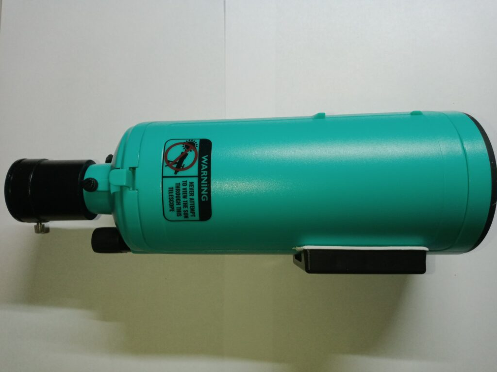
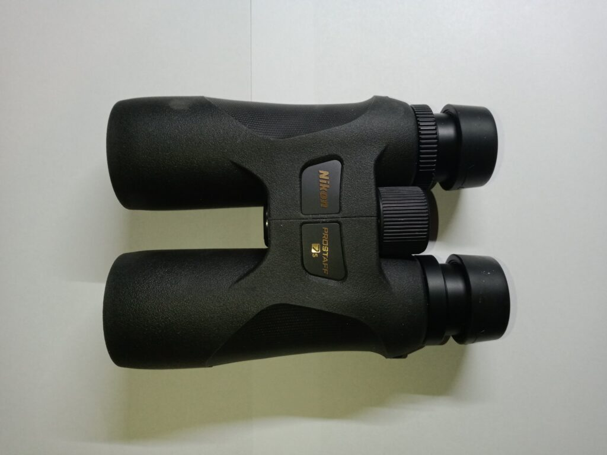
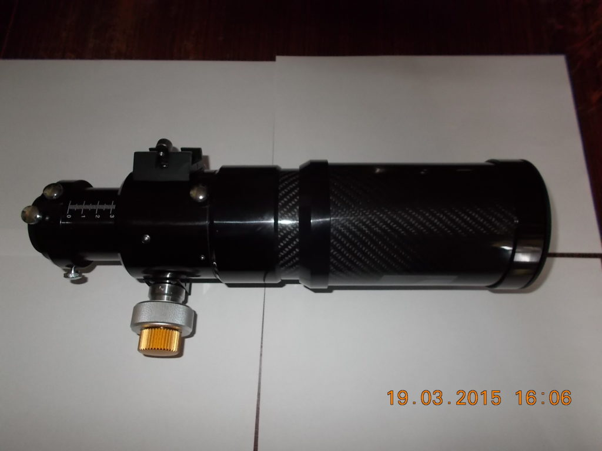
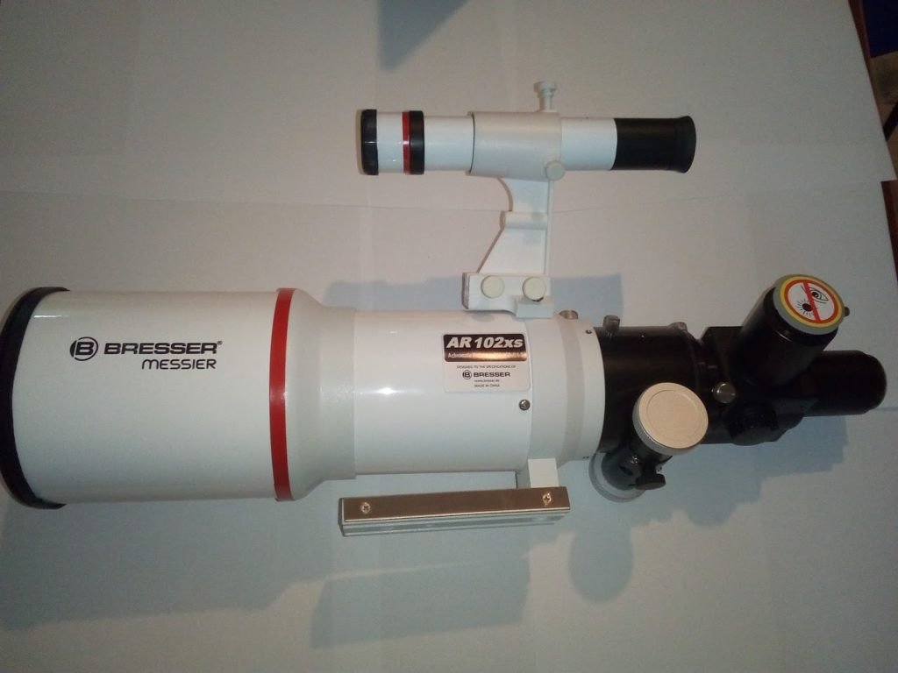
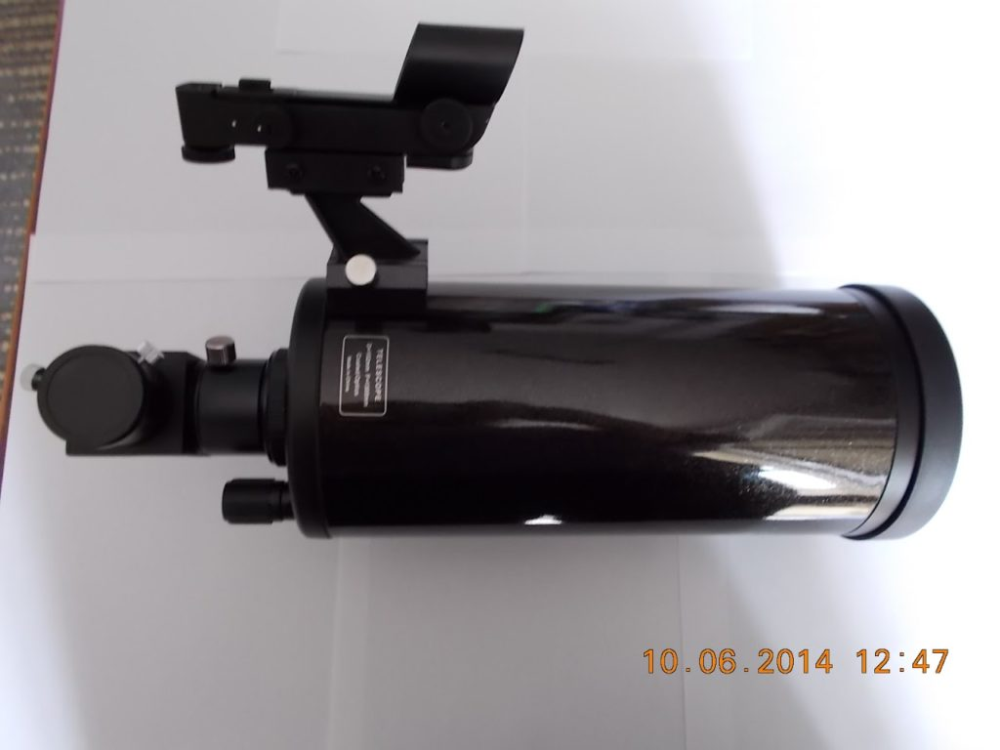
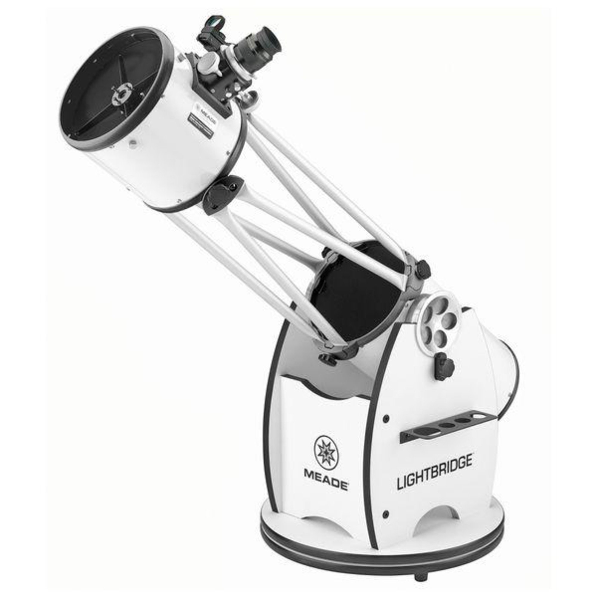

| Instrument | Beschreibung |
|---|
| Maksy (aktuell Hauptteleskop für unterwegs) |
|  |
- Typ: Maksutov
- Öffnung: 60mm
- Brennweite: 750mm
- Gewicht: 434g
- Erwerbungsjahr: 2022
|
| PROSTAFF 7s |
|---|
|  |
- Typ: Fernglas (Dachkant)
- Öffnung: 42mm
- Vergrößerung: 8-fach
- Erwerbungsjahr: 2020
- Anmerkung: wurde erworben, um in die Astronomie mit dem Fernglas
einzusteigen. Vorteil des Ganzen: ich muss deutlich weniger auf dem Berg schleppen.
|
| TS INED70 |
|---|
|  |
- Typ: Refraktor (ED)
- Öffnung: 70mm (2,76")
- Brennweite: 420mm
- Öffnungsverhältnis: f/6
- Gewicht: 1,7kg
- Anmerkungen: Carbontubus, 2" Okularauszug mit Mikroumsetzung, Transportkoffer
- Erwerbungsjahr: 2015
|
| Bresser AR 102xs (Sternwarteninstrument) |
|  |
- Typ: Refraktor
- Öffnung: 102mm (4")
- Brennweite: 460mm
- Öffnungsverhältnis: f/4.5
- Anmerkung: angeblich ED-Glas, den Farbfehler nach eher nicht
- Erwerbungsjahr: 2017
|
| Skywatcher Skymax 102 (für Planeten- und Mondbeobachtung) |
|  |
- Reflektor (Maksutov Cassegrain)
- Öffnung: 102mm (4")
- Brennweite: 1300mm
- Öffnungsverhältnis: f/12,7
- Gewicht (Tubus): 1,9kg
- geliefertes Zubehör: Leuchtpunktsucher, Anschluss für ein
Fotostativ, 45° Prisma
- Erwerbungsjahr: 2014
|
| Meade Lightbridge 8" DeLuxe |
|
 |
- Typ: Reflektor (Dobson)
- Öffnung: 203mm (8"), parabolischer Hauptspiegel (94% Reflektion)
- Brennweite: 1219mm
- Öffnungsverhältnis: f/6
- Gewicht: 10,9kg (Gittertubus) + 9kg (Rockerbox) = 19,9kg
- Zubehör: 2" Grayfordauszug, Leuchtpunktsucher, seitlicher
Okularhalter, Lüfter (Batteriebetrieben), Adapter auf 1,25"
- Erwerbungsjahr: 2014
- Bildquelle: https://duckduckgo.com/?q=Bresser+Lightbridge+8%22+DeLuxe&t=bravened&iax=images&ia=images&iai=https%3A%2F%2Fnimax-img.de%2FProduktbilder%2Fultra%2F10211_1%2FMeade-Dobson-telescope-N-203-1219-8-LightBridge-Deluxe-truss-tube.jpg, abgerufen am 03.11.2024
|